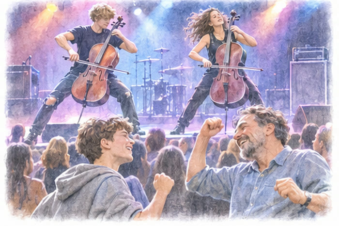

Listen to the text
Speed:

Liubomyr and Orysia are talking after the weekend. Orysia: You look happy. What happened? Liubomyr: I went to the best concert of my life on Saturday. Orysia: Really? Who was playing? A rock band? Liubomyr: Yes and no. It was two cellists. Orysia: Cellos? Seriously? I thought classical music was not your thing. Liubomyr: It isn't. But for your information, they didn't play classical music. They played rock hits. On cellos! Orysia: Is that possible? Liubomyr: It is called crossover. It is a combination of two genres. They take a famous rock song and play it on classical instruments. A cello can sound like an electric guitar. I didn't believe it either. Orysia: And how was the atmosphere? Liubomyr: Incredible. For the first ten minutes people sat quietly, like in a theatre. Then the cellists stood up and started to play standing. One of them broke a string. By the end the whole hall was dancing. Even my dad. Orysia: Your dad? The man who listens only to the news? Liubomyr: He bought a T-shirt. Orysia: Wow. So what is your thing now? Rock or classical music? Liubomyr: Both. I have understood that there is no wall between them. Good music is good music. Orysia: You know, I play the cello. Liubomyr: You? Since when? Orysia: For five years. I never told anybody, because I thought it wasn't cool. Liubomyr: For your information, it is the coolest thing that I have heard today. Can you play a rock song? Orysia: Give me a week.
Tap any sentence to hear it again.
Сподобалось? На сайті ще більше матеріалів для вчителів!
Reader, презентації, ігри, діагностичні та контрольні роботи до підручників 1-11 класів.
Перейти на сайт materials.allaenglish.com